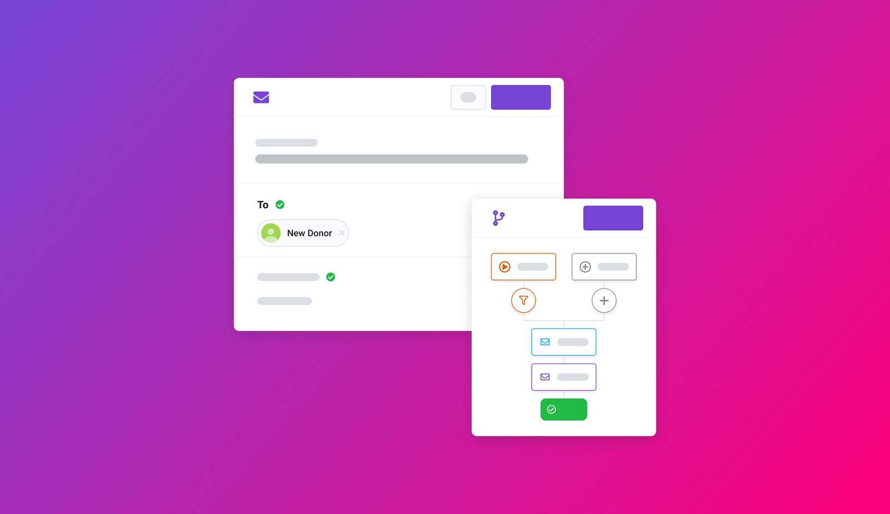
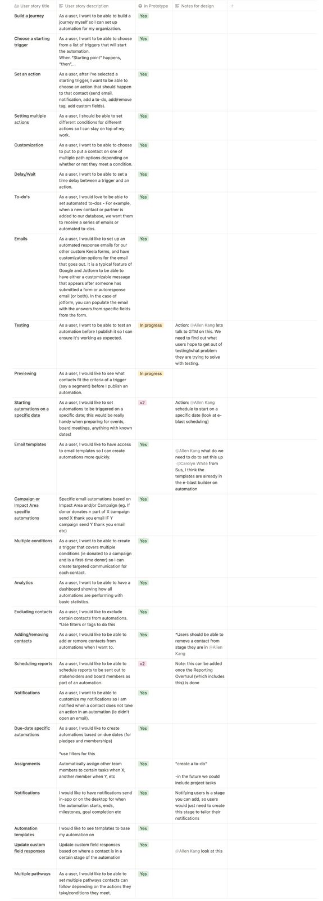
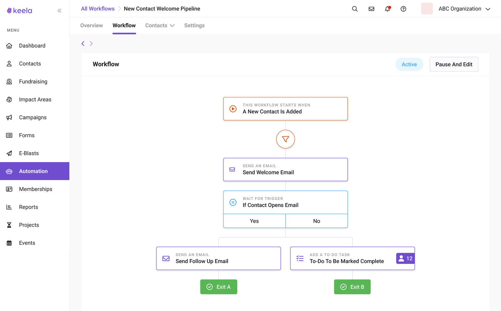
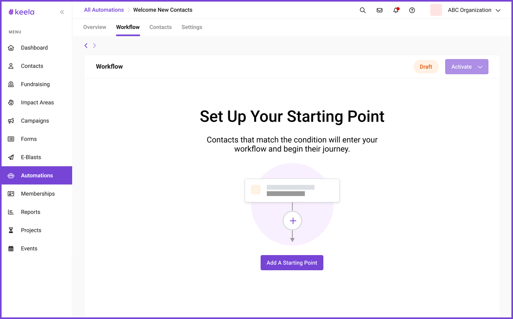
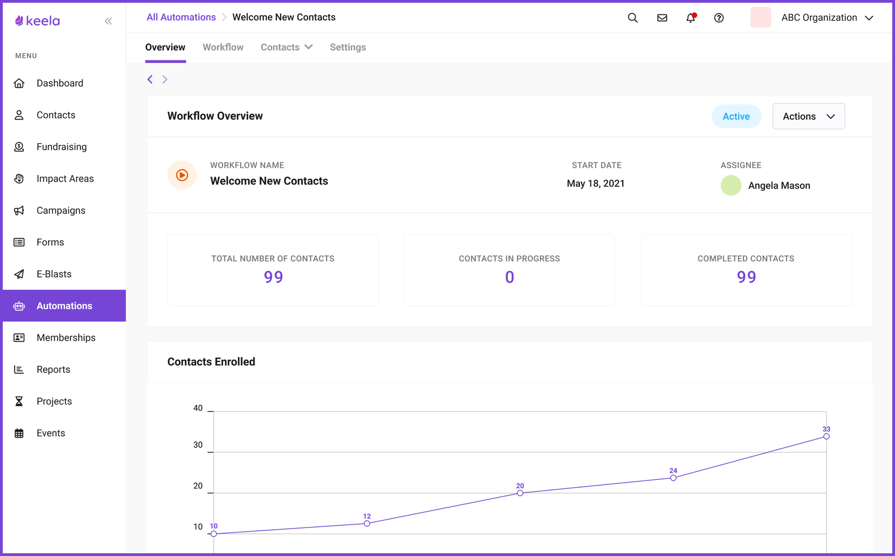
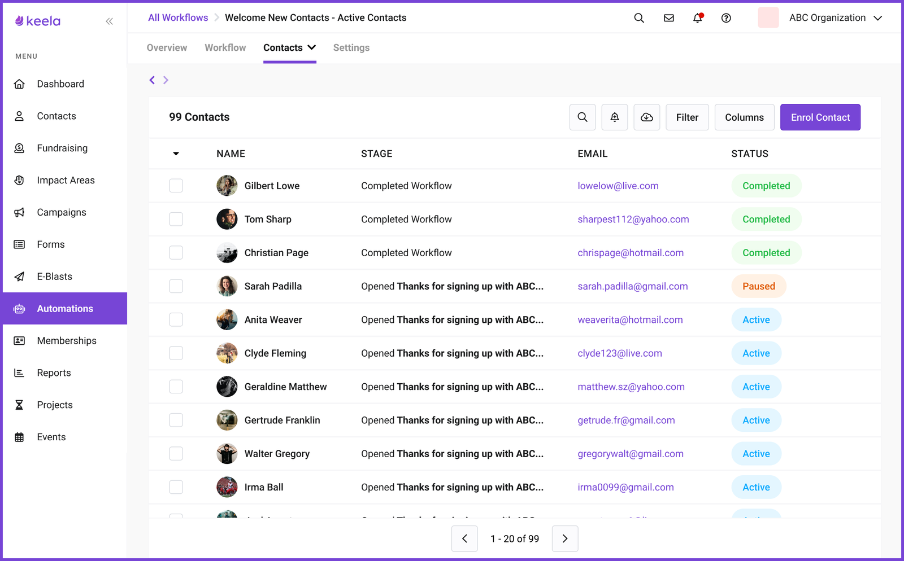
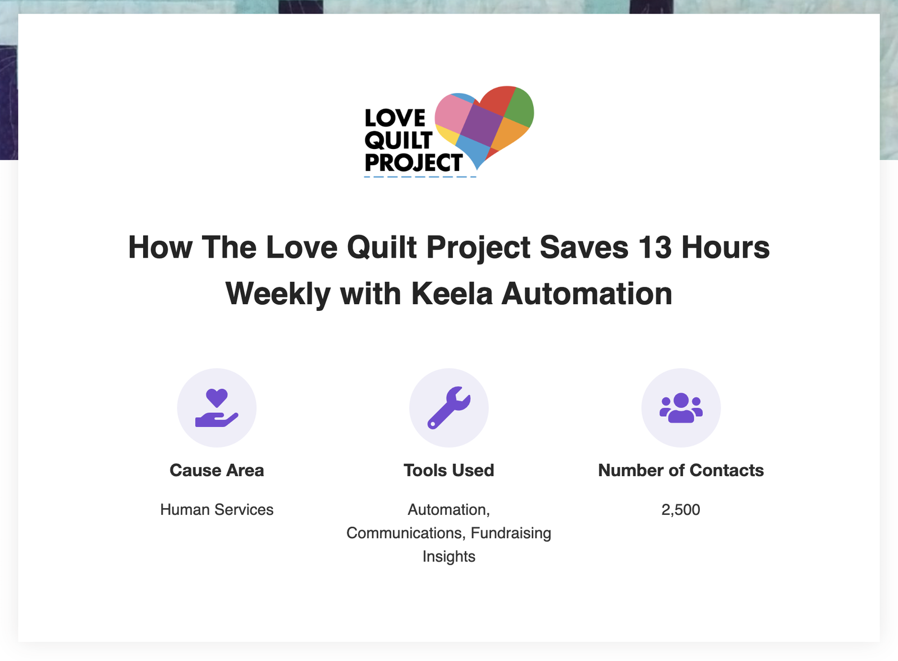

New Feature
Automation for Nonprofits: When the Real Obstacle Is Fear
Nonprofit teams are chronically under-resourced. We built a no-code automation system from scratch, and the hardest design problem turned out to be fear, not complexity.

Context
Automation was the #1 requested feature on the roadmap and a growing gap competitors were starting to win deals on. Nonprofit staff wear too many hats, and repetitive tasks (thank-you emails, donor record updates, follow-up triggers) eat hours that should go toward the actual work. I partnered with the Product Manager and CTO to frame this as more than a feature: a platform capability that would open up future surface area for integrations, AI-assisted workflows, and custom donor journeys.

The Research Surprise
I talked to 15 nonprofit operations managers and expected to hear about complexity concerns. Instead, the #1 fear was much simpler:
"What if I accidentally email all 5,000 of our donors?"
That insight reshaped the entire design. The problem wasn't complexity. It was confidence. People needed to trust the system before they'd use it.
I also studied the competitive landscape by testing Hubspot and Mailchimp directly using Keela's internal accounts, finding strengths and weaknesses, not just feature lists. I analyzed Phrasee, Klaviyo, Simplero, and ActiveCampaign. The research surfaced user stories we hadn't initially captured and exposed real gaps in competitor approaches around re-enrollment logic and contact-level control.

The Design
The easy version of this feature ships the workflow builder alone and calls it done, since that's the part everyone asked for on the roadmap. I decided the builder wasn't the hard problem. The hard problem was getting someone who had never trusted software with donor data to press activate. Every decision below answers to that, not to feature completeness.
Visual Workflow Builder
A node-based canvas that makes automation logic tangible. Users see their automation as a visual flow (trigger, conditions, actions) instead of filling out abstract forms. The builder deliberately constrains complexity: start from a template, extend it. No blank canvas anxiety.
Preview Mode (The Key Feature)
Before activating any automation, users can preview exactly which contacts it would affect. This was the feature that gave people the courage to actually turn things on. They could verify without risk. This design decision directly traces back to the 5,000-donor fear uncovered in research.

Templated Journeys
Rather than a blank canvas, users start from pre-built journey types: New Donor Journey, Recurring Donor Journey, Disengaged Donor Journey. Each template suggests trigger timing and email structure: not the copy, but the scaffolding. Getting the scaffolding right is what most organizations struggle with.
Progressive Complexity
New users see a curated template library. As they build confidence, the interface reveals more: custom triggers, conditional logic, multiple branches. The system grows with the user.
Testing
I ran three rounds of prototype testing, each focused on a different part of the experience. The PM and Lead Designer joined sessions to record notes. Each round fed back into Linear as prioritized action items.



What Happened
Automation launched as a premium paid add-on:
- Reached 30% adoption across 355 organizations
- Contributed to a 13% ARR increase for the product

The preview mode insight (building for confidence, not just capability) is something I keep returning to. It applies to design systems, data integrations, and any feature where users fear irreversible consequences.